Arquitetura de atendimento omnichannel com centralização de canais, automação de resposta e serviços auxiliares.
Integração de Sistemas e APIs
ChatwootDockerPostgreSQLFlaskMensageria
Visão Geral
O case apresenta uma arquitetura de atendimento capaz de concentrar conversas, organizar regras de triagem e sustentar automação em um fluxo omnichannel.
Desafio Técnico
O desafio era estruturar um fluxo de atendimento com múltiplos canais de entrada, regras de resposta e separação clara entre a plataforma de atendimento e a camada de automação.
Solução Desenvolvida
A solução combina Chatwoot como núcleo operacional, canais externos de mensageria, camada de eventos, categorização de mensagens e um serviço auxiliar em Flask para decisões automatizadas.
Arquitetura / Fluxo
Canais de entrada
Chatwoot
Eventos de integração
Serviço auxiliar
Regras e categorização
Resposta assistida
Ilustrações Técnicas
Registros visuais, diagramas ou representações técnicas utilizados para contextualizar
a arquitetura, o fluxo e os resultados do projeto.
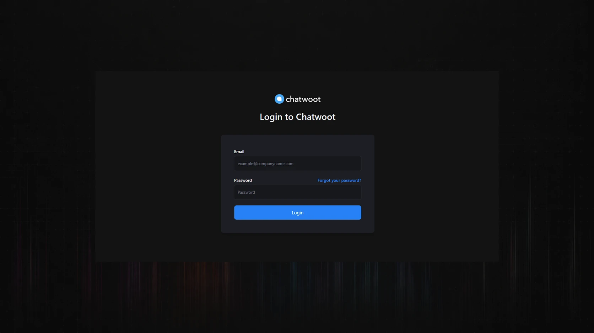
Tela de autenticação da plataforma Chatwoot, representando o acesso administrativo ao ambiente de atendimento omnichannel.
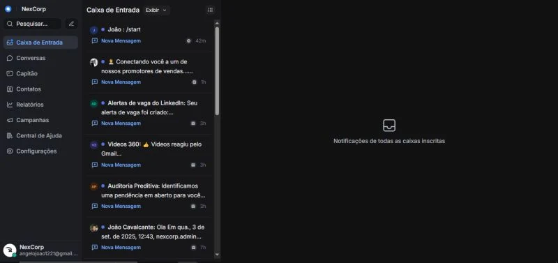
Caixa de entrada centralizada para acompanhamento de notificações e interações recebidas pelos canais integrados da operação omnichannel.
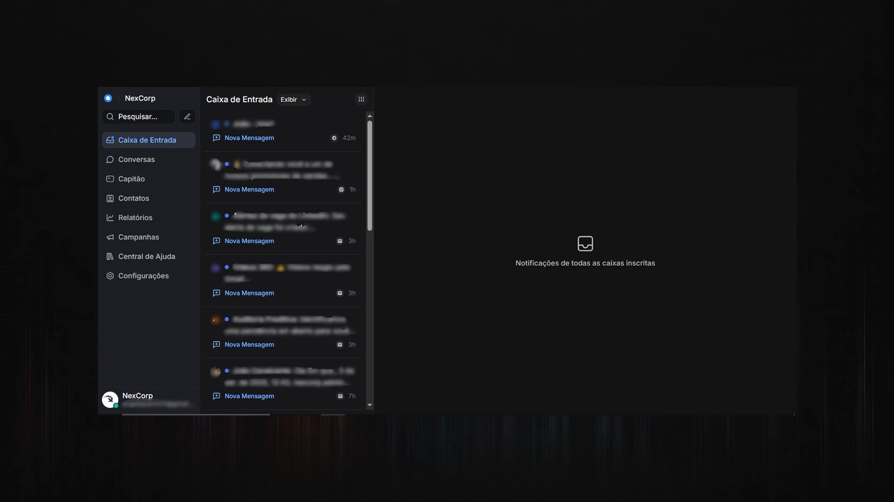
Painel de conversas omnichannel reunindo atendimentos de diferentes canais em uma única interface de operação.
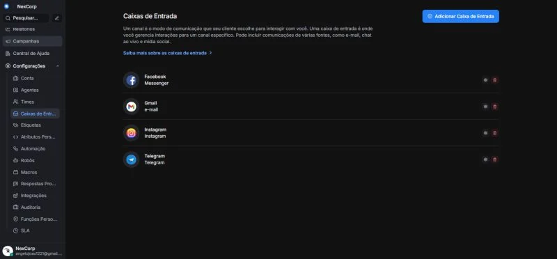
Configuração das caixas de entrada integradas ao Chatwoot, contemplando canais como Facebook Messenger, Gmail, Instagram e Telegram.
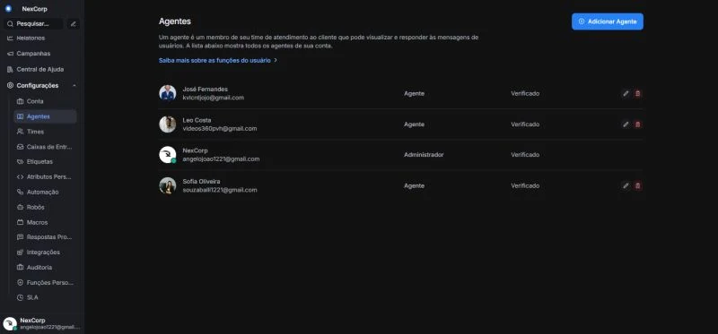
Gerenciamento de agentes da plataforma, com definição de perfis, permissões e participantes responsáveis pelo atendimento ao cliente.
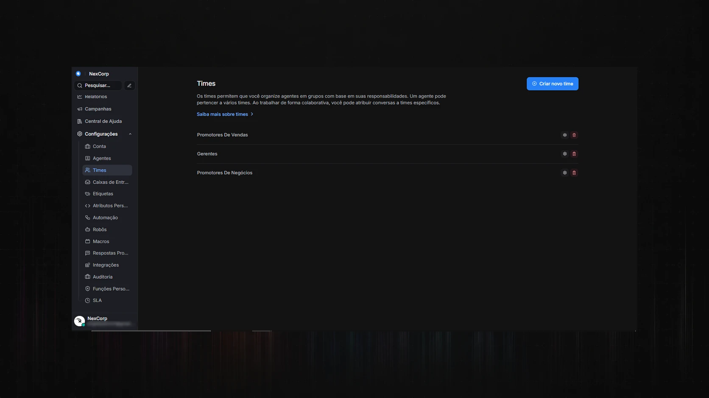
Organização dos agentes em times operacionais, permitindo distribuição de conversas por área, função ou responsabilidade de atendimento.
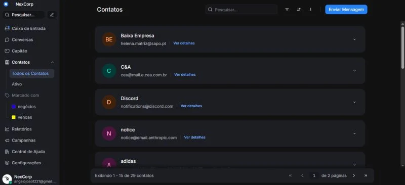
Base de contatos integrada ao atendimento, funcionando como apoio operacional para histórico, identificação e relacionamento com clientes.
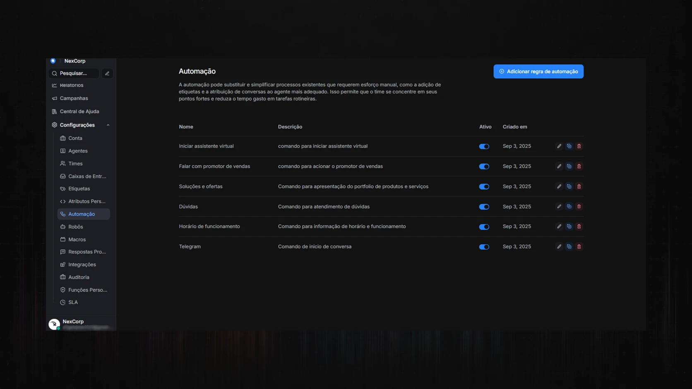
Regras de automação configuradas para padronizar fluxos de atendimento, acionar comandos, responder dúvidas e apoiar o assistente virtual.
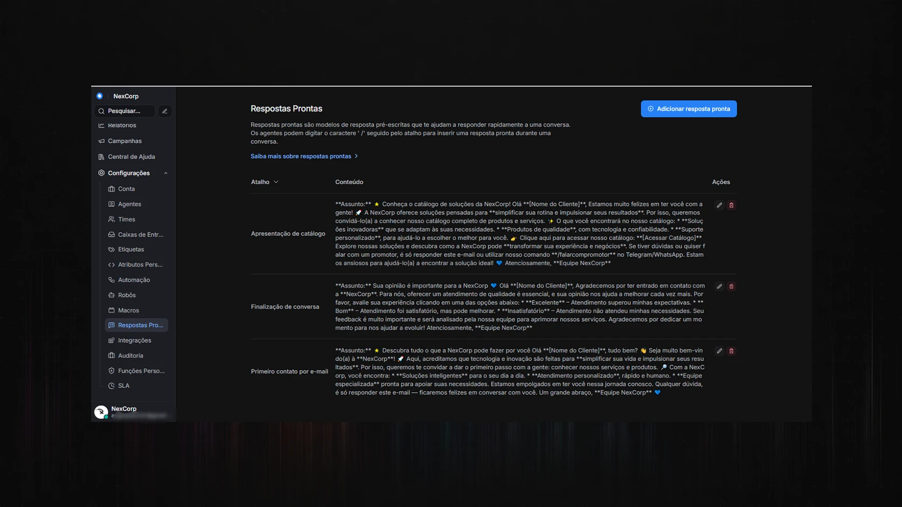
Respostas prontas estruturadas para acelerar o atendimento, padronizar comunicações e apoiar agentes durante conversas recorrentes.
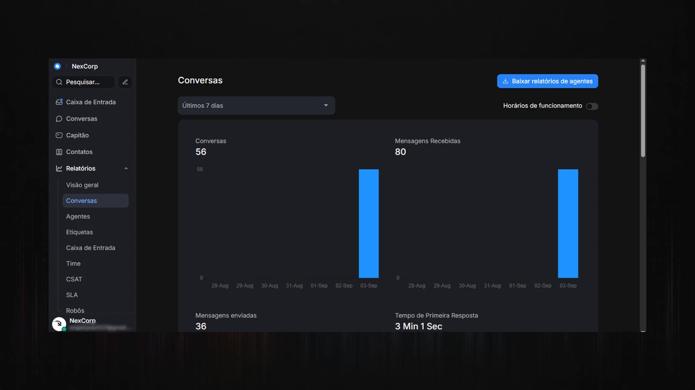
Relatório de conversas com métricas de volume, mensagens recebidas, mensagens enviadas e tempo médio de primeira resposta.
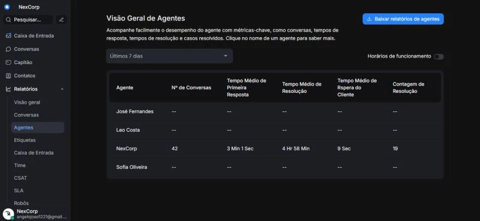
Visão geral de agentes com indicadores de desempenho, tempo de resposta, tempo de resolução e quantidade de casos resolvidos.
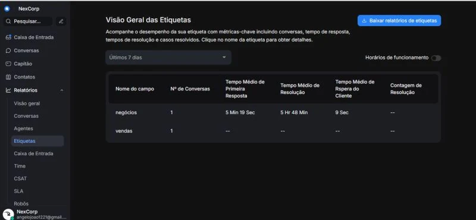
Relatório por etiquetas para acompanhar categorias de atendimento, classificar demandas e medir desempenho por tipo de conversa.
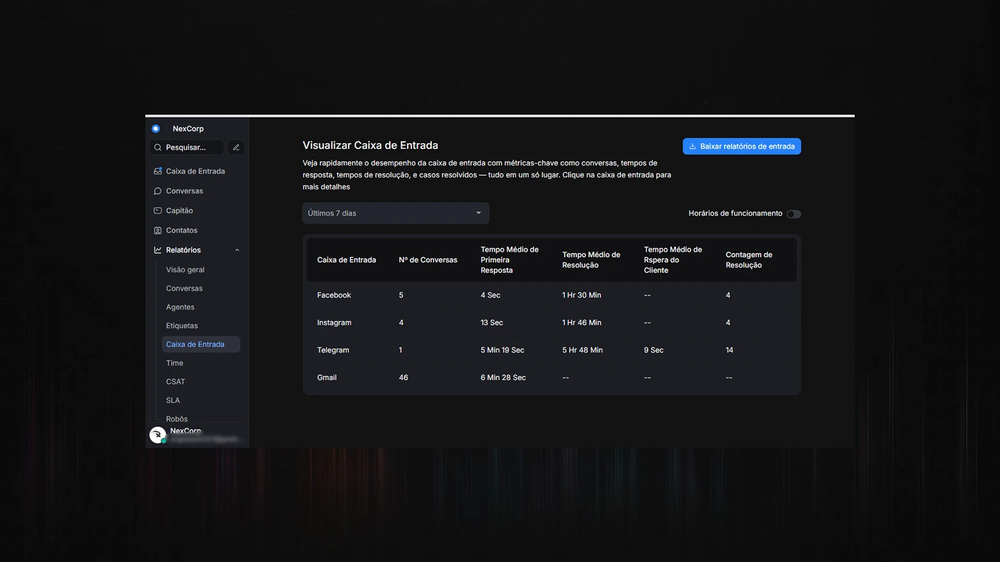
Comparativo de desempenho por caixa de entrada, permitindo avaliar volume, resposta e resolução entre os canais integrados.
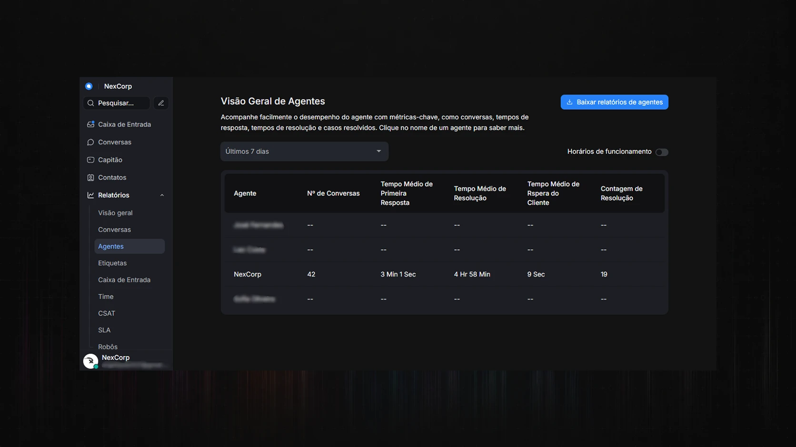
Resumo de desempenho por time, oferecendo visão gerencial sobre volume de conversas, tempo de resposta e resolução dos atendimentos.
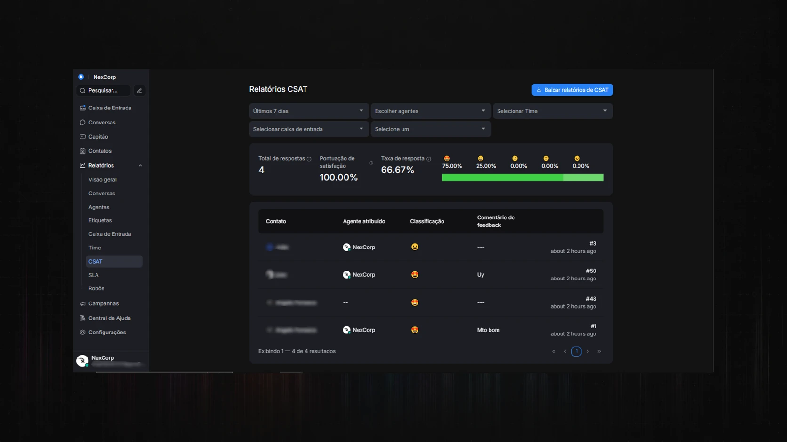
Relatório CSAT para análise de satisfação dos clientes, taxa de resposta, classificações recebidas e comentários de feedback.
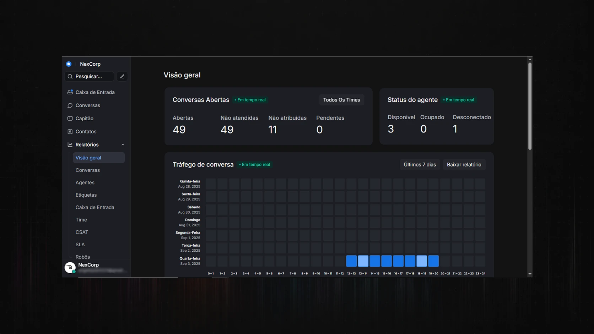
Visão geral operacional do Chatwoot, consolidando conversas abertas, atendimentos pendentes, status dos agentes e tráfego de atendimento em tempo real.
Entregas Técnicas
Recebimento centralizado de mensagens.
Integração com múltiplos canais.
Camada de regras para automação de resposta.
Separação entre atendimento e serviço auxiliar.
Estrutura técnica preparada para evolução controlada.
Competências Demonstradas
Desenho de integração omnichannel.
Modelagem de fluxos conversacionais.
Arquitetura de serviços web em containers.
Integração entre plataforma de atendimento e automação.
Curadoria técnica para publicação pública segura.
Resultado Técnico
O material demonstra entendimento consistente de integração omnichannel e automação de resposta.